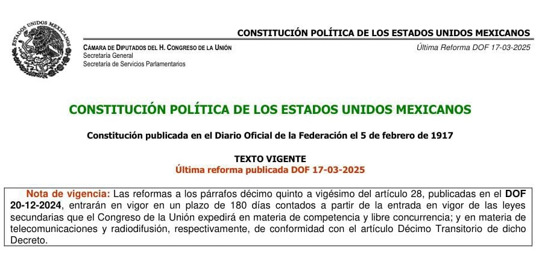

CONSTITUCIÓN POLÍTICA DE LOS ESTADOS UNIDOS MEXICANOS
Que el Congreso Constituyente reunido en esta ciudad el 1o. de diciembre de 1916, en virtud del decreto de convocatoria de 19 de septiembre del mismo año, expedido por la Primera Jefatura, de conformidad con lo prevenido en el artículo 4o. de las modificaciones que el 14 del citado mes se hicieron al decreto de 12 de diciembre de 1914, dado en la H. Veracruz, adicionando el Plan de Guadalupe, de 26 de marzo de 1913.
Descargar